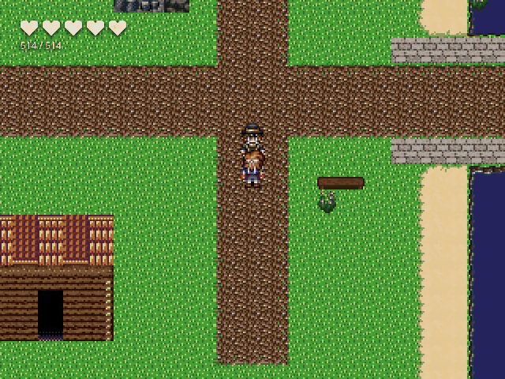
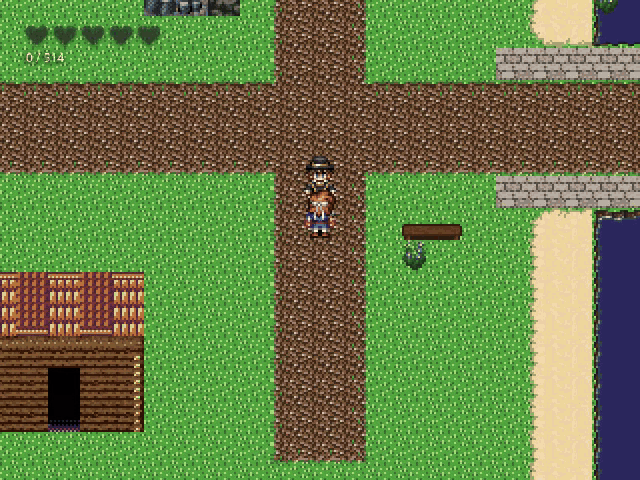
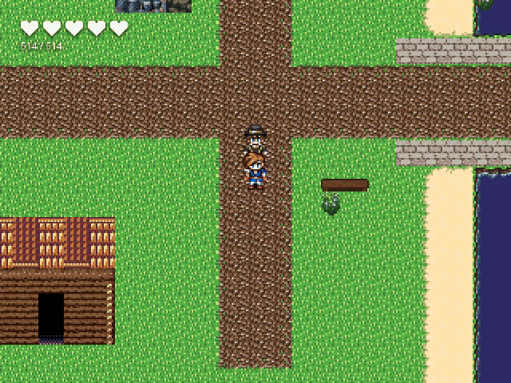

01 · 추격자에게 붙잡힘
정적 1초 → 직접 쓴 장면 → 공포형 제목 → 재시도 선택.

02 · 전투 전멸 · 회복소
암전 → 패배 메시지 → 파티 회복 → 지정 위치 귀환. 진행 변수 37 유지, 귀환 후 이동 확인.

03 · 시간 초과
암전 → 독립된 메시지 → 타이틀 자동 복귀. 재시도 메뉴를 거치지 않는 결말.
GIF는 실제 게임 화면 녹화입니다(1배속·12fps·무음). QA 프로젝트는 메모리 fixture이며 SQLite 정본 저장 증거가 아닙니다. Vitest·전체 typecheck·gates는 이번 세션에서 실행하지 않았습니다.